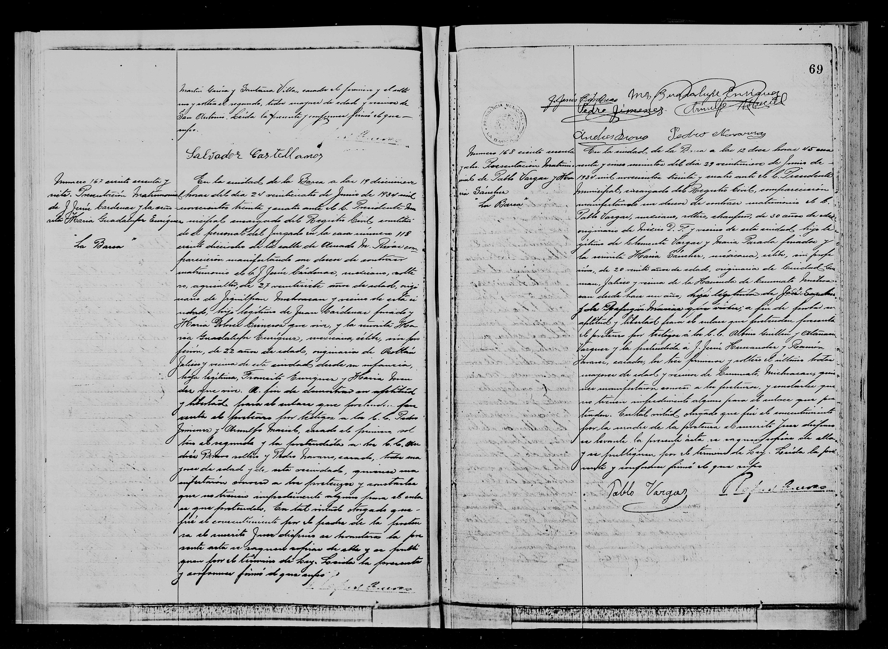

Jesús Cárdenas y María Guadalupe Enríquez

| Tipo | Acta de matrimonio |
| Fecha | 24 de junio de 1934 |
| Lugar | La Barca |
| Acta / página | Acta 167, p. 69 |
| Esposo | Jesús Cárdenas Cimeros, 27 años; padres Juan Cárdenas / Maria Dolores Cimeros |
| Esposa | María Guadalupe Enríquez, 22 años; padres Enriquez / Maria Mandez (apellido del padre no indexado: ilegible/duda) |
Transcripción pendiente de verificación: los datos provienen del índice del registro; el manuscrito no ha sido releído línea por línea. Todo texto manuscrito no verificado se marca «ilegible/duda».